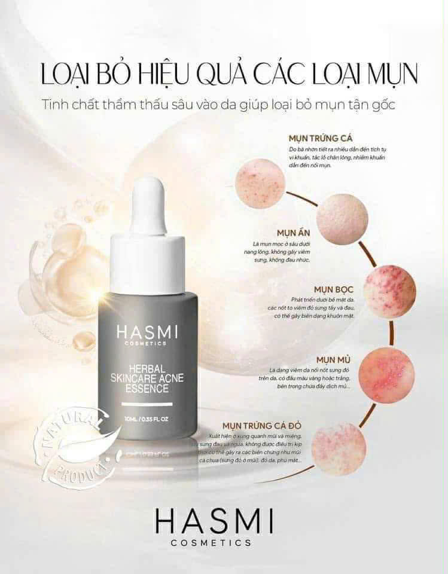
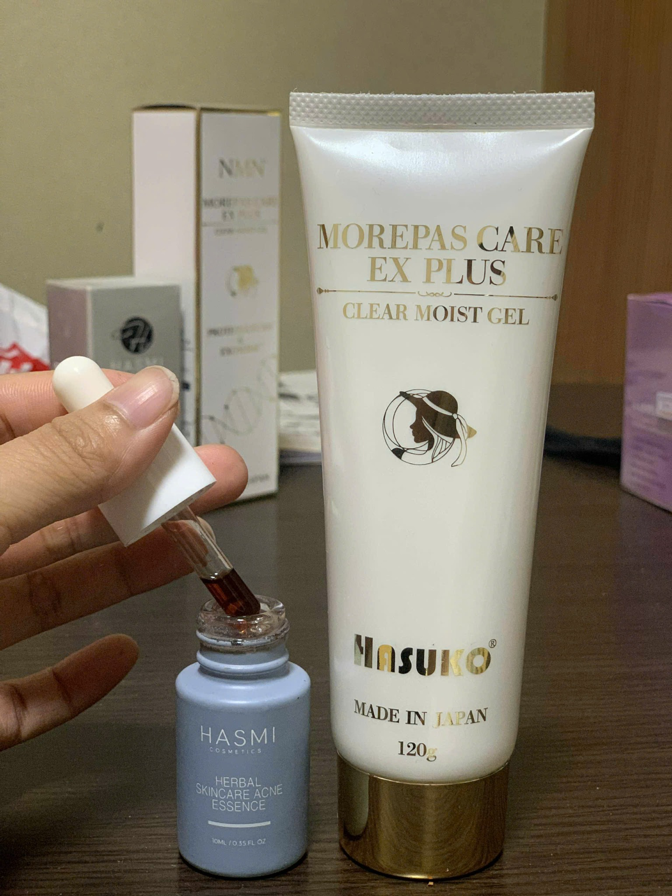
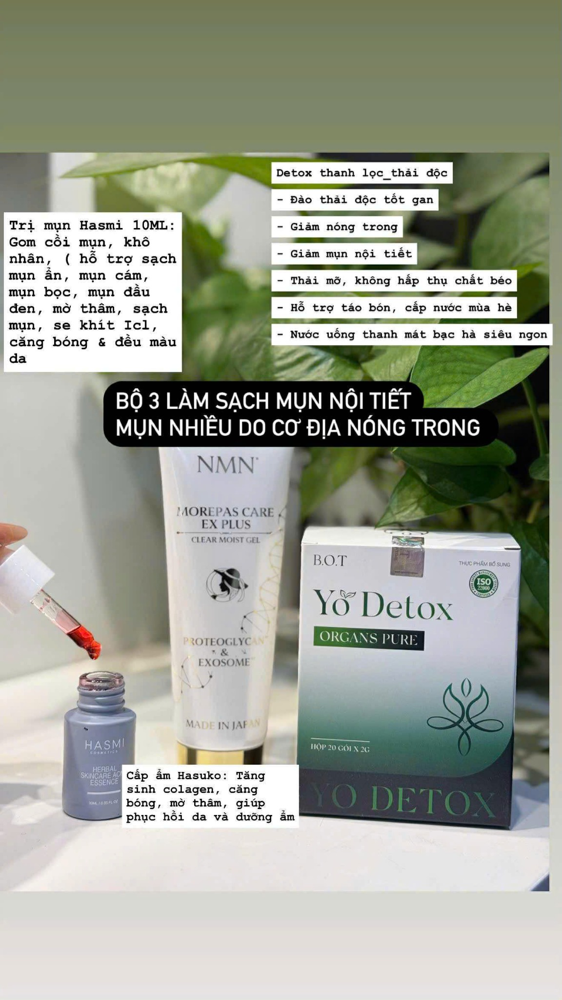

Serum trị mụn • NiacinamideHASMI Herbal Skincare Acne Essence 10ml
Tinh chất thảo dược thấm sâu, hỗ trợ làm sạch nhân mụn, giảm viêm, mờ thâm và cân bằng dầu.
Chọn lựa kỹ lưỡng – giao diện gọn gàng, trải nghiệm mượt mà. Nhấp vào từng sản phẩm để xem thông tin chi tiết, công dụng, cách dùng và thông số.

Serum trị mụn • NiacinamideTinh chất thảo dược thấm sâu, hỗ trợ làm sạch nhân mụn, giảm viêm, mờ thâm và cân bằng dầu.

Gel cấp ẩm phục hồiGel dưỡng ẩm trong suốt giúp làm dịu, phục hồi da; hỗ trợ tăng sinh collagen và cải thiện độ đàn hồi.

Đồ uống thảo mộc thanh lọcThức uống hỗ trợ thanh lọc nhẹ, giảm nóng trong, mát gan và cấp nước dễ chịu – hương bạc hà thanh mát.
Routine trị mụn chuẩn với sản phẩm của shop:
*Sản phẩm mỹ phẩm không phải thuốc, không có tác dụng thay thế thuốc chữa bệnh.